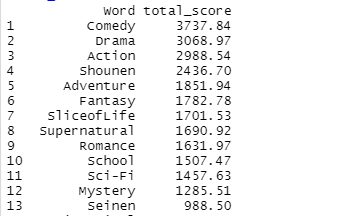
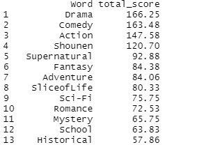
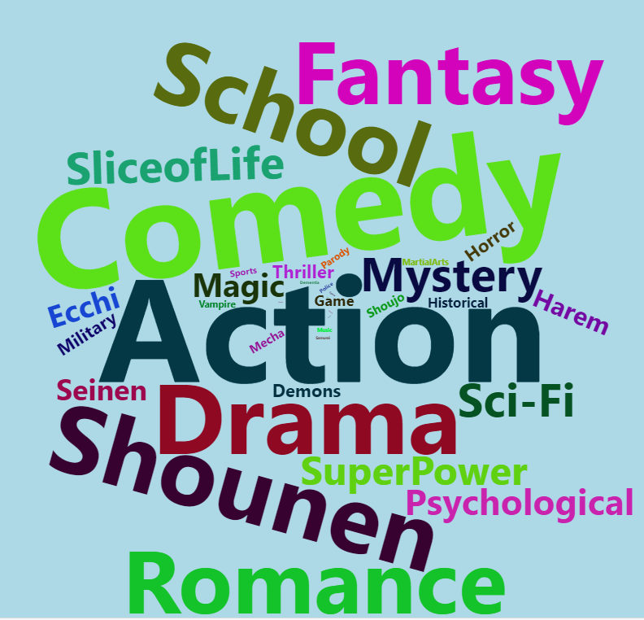
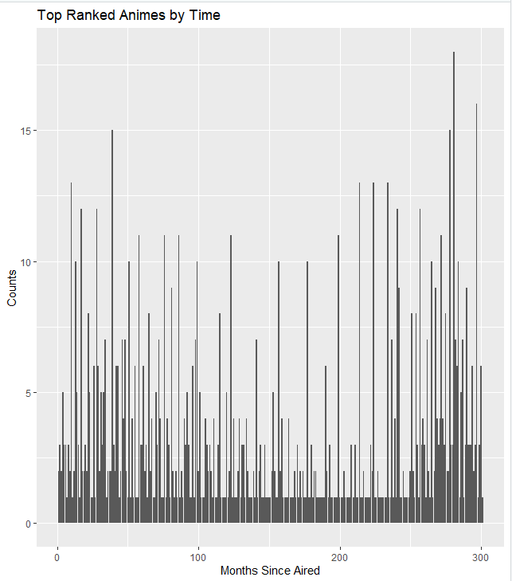
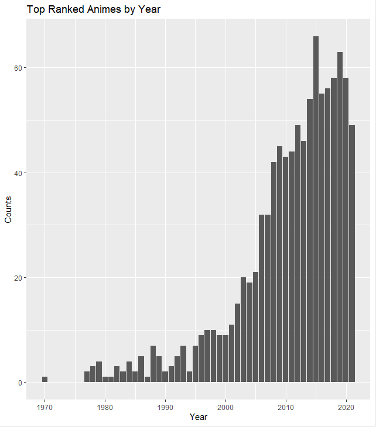
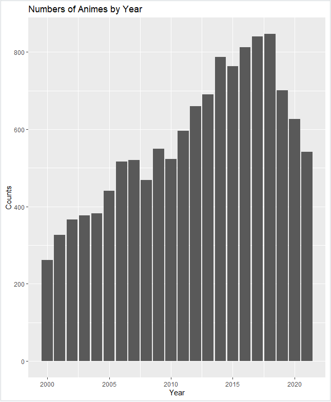
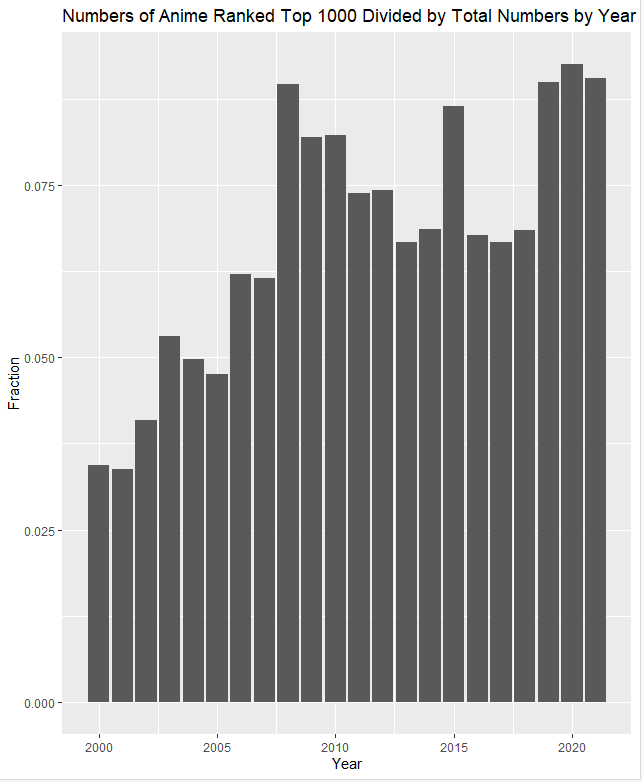

Intro
|
The goal of this part is to have basic exploration of the datasets, including simple visuals and some direct statistics. |
WordCloud of Anime Tags
Scores in Two Ways
|
Using the dataset of RK_whole_score.txt, we can have a wordcloud of top scored Tags among top ranked animes from MyAnimeList. |
||
|
Using the dataset of RK_cut_tail_score.txt, we can have a wordcloud of top scored(calculation in another method)of Tags among top ranked animes from MyAnimeList. |

|
|
The above two wordclouds are similar, but a little different in the ways of calculating Total_Score. In the whole_score dataset, the score of a tag is directly the sum of scores of all the animes containing the tag. But in the cut_tail_score dataset, the score of a tag is the sum of difference between scores and the minimum score of all the animes containing the tag. So in the whole_score dataset, the tags that contained by larger numbers of animes with a relatively low rank win(All the rank score added has a basic value). In the cut_tail_score dataset, tags contained by animes with low rank don't win anymore. For example, Tag Comedy comes the first in whole_score, but is defeated by Drama in cut_tail_score. Probably that means people watch animes of Comedy more and give relatively good ranks to them. But the top rank always exist in those Dramas. |
Whole_ScoreCut_Tail_Score |
Top Ranked vs Most Popular
|
Using the dataset of POP_whole_score.txt, we can have a wordcloud of top scored of Tags among the most popular animes from MyAnimeList. Animes of Action are just the most popular. And that is similar to what happens in movies HAHA. |
 |
Taste Difference in Regions
|
Using the dataset of Bangu_RK_whole_score.txt, we can have a wordcloud of top scored of Tags among the most popular animes from Bangumi. Since Bangumi is an anime website in China, tags may differ from what we have in MyAnimeList, which represents the taste of the whole world. And Bangumi allows users to edit the tags, so we just have much more tags here. If we ignore the tags irrelevant to the topic or content of animes, then we have the top 10 tags as below: "Comedy" "Fantasy" "Relief" "Science Fiction" "Fight" "Passion" "Daily Life" "School" "Love" "Childhood" which have relevance to, but are different from the previous tags discussed on. |
Histograms by Time
Month Feature
|
If we counts the animes by months, we can have a histogram on the right. We can see that numbers of animes have some regular dramatic change in months. That is because animes are mostly aired in four months in one year: Jan., Apr., Jul., Oct. |
 |
Top 1000 Ranked Animes by Year
|
The reason for increase of numbers of top rank animes could be increase of total numbers of animes, which is due to the technical developments like Computer Graphics. It could also be the true improvement of painting skills and storytelling methods. |
 |
Total Numbers from 2000 to 2021
|
Yes the total number of animes has increased dramatically. And what is interesting is that the total number per year has decreased for these two years. |
 |
'Quality' of Animes from 2000 to 2021
|
If we use the fraction of numbers of top ranked animes in certain year divided by the total numbers of that year, we can have the histogram on the right. The fraction somehow measures the art quality of animes. So we can see the quality of animes also improves.
|
 |
Codes
Here are the codes used to explore the data.
ExploringData1.r
Generates all the English wordcloud visuals in the part of WordCloud of Anime Tags
DataCleaning3.r
Generates the Chinese wordcloud visuals in the part of WordCloud of Anime Tags
ExploringData2.r
Generates all the visuals in the part of Histograms by Time